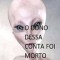

Who Am i??

i am okigi n i do artistic things...
i used this template site for an html taskoq eu faço da vida
- acordo
- tomo cafe da manha
- mexo no pc
- janto
- viro a noite
- desmaio de sono
ultimos comentarios
-
"sabe demais, seloko..."
@kit_mito_123 -

"rip hatsu, só lhe resta o churrascamento"
@_cucabeludo -
"desista dos seu sonhos e morra"
@Paulin_Pinho